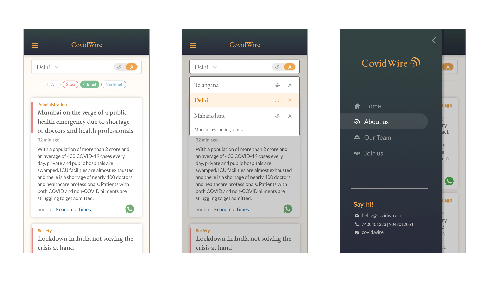

Our process to design the application was iterative in nature. During every release, we would redesign certain aspects to accomodate new requirements and remove shortcomings of the existing design. At all points, we tried to keep the UX simple and familiar as most of our target demographic were emergent users. To better understand how to design the final flow of news consumption in our application, we first built a beta version to test out the core features.

We gathered insights from volunteers and beta users regarding the webapp, to set out for designing the first version. Some key learnings from beta run:
- Feed becomes monotonous with no visual difference between news cards
- Information architecture gets complex quickly when introducing filters (domains, regions)
- Region switch happened rarely where as language switch happened frequently
- 12 News/session was the average read rate
- Certain news stories can be conveyes with just headlines
- Utility functions like bookmark, feedback and search were desired
- Familier design patterns, similar to the ones on social media apps are the most effective for emergent users